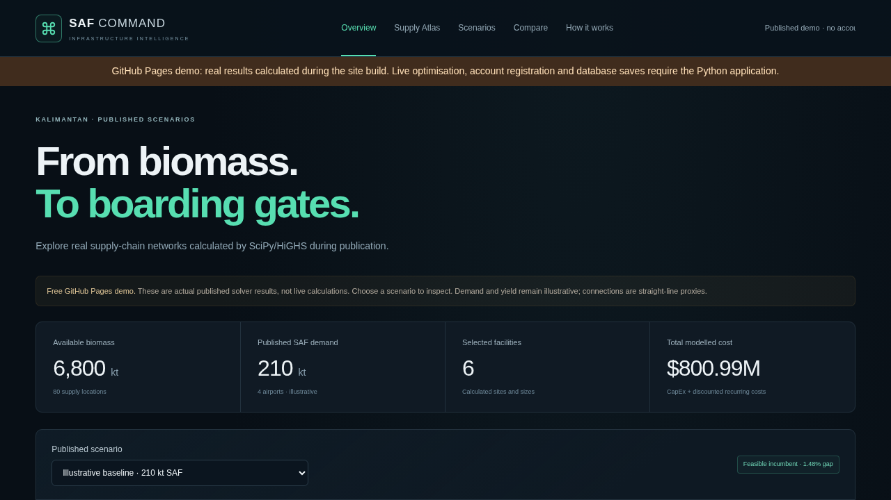

SAF COMMAND
From biomass to boarding gates. Every decision optimised.

The planning problem
Dispersed biomass, facility investment and airport supply must be coordinated. SAF Command jointly selects depot/refinery sites, sizes and three-stage material flows across Kalimantan.
The implementation
Next.js and MapLibre interface; FastAPI; SciPy/HiGHS MILP; PostgreSQL, SQLAlchemy and Alembic; Docker and GitHub Actions. Constraints enforce source supply, capacity, mass yield and exact airport deliveries.
Inspectable evidence
Costs, capacities, flows, input snapshots, provenance and actual solver gaps. Independent checks cover the mathematical constraints, accounts, ownership and exports.
What judges can use now
The free public site provides the atlas, three genuine build-time solves, comparisons, explanations and JSON/CSV downloads. No signup or AI key is required.
What requires Docker
Editable assumptions, live Python optimisation, accounts and database-backed scenario history are implemented in the full application. They are not hosted on GitHub Pages.
Model limits
Demands/yield are illustrative. Routes are straight-line proxies; sites need permitting/engineering checks. Unknown operating economics and lifecycle emissions remain outside the model.